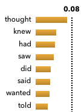
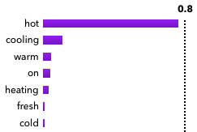

A chat assistant is asked for a story idea. Many next tokens are good, and the single likeliest reply is the blandest one; searching for it also loops (Beam Search, the degeneration section).
Sampling draws the next token at random, with each token’s chance as its odds. Replies vary from run to run, and the loop of the likeliest text goes away.
It runs at every generated token. All it carries is the distribution and a random state, the seed; the same seed gives the same reply again.
Sampling draws the next token from the model’s distribution.
Pick the next token \(x_t\) at random, with each token’s own chance as its odds; \(x_{\lt t}\) is the reply so far.
tokens of the reply
2 The tail problem
Pure sampling uses the whole distribution, including the long tail of thousands of unlikely tokens. Each one is rare, but together they hold a real share of the chance.
A small risk per token becomes a near certainty over a long reply, and one strange token pulls the tokens after it off topic.
Figure 1. Illustrative. The longer the reply, the likelier pure sampling has drawn at least one tail token.
Holtzman et al. (2020) show what that looks like with GPT-2 Large and the unicorn opening of Beam Search:
Pure sampling, same openingThey were cattle called Bolivian Cavalleros; they live in a remote desert uninterrupted by town, and they speak huge, beautiful, paradisiacal Bolivian linguistic thing.
Figure 2. Fluent phrases, nonsense as a whole. From the nucleus sampling paper’s Figure 1.
The next four sections are the four common ways to reshape the distribution before the draw.
3 Temperature
Temperature, \(\tau\), is one dial that sets how random sampling is, by rescaling every logit before the softmax.
Each logit is divided by the temperature before the softmax.
Divide every logit \(z_i\) by the temperature \(\tau\) before the softmax. Below one, the gaps between scores grow and the distribution sharpens; above one, they shrink and it flattens. The order of the tokens never changes.
The ends of the dial: as \(\tau\) shrinks toward zero all the chance piles onto the top token, at one the model’s own distribution is used, and as it grows every token becomes equally likely.
logittemperatureprobability
Figure 3. Illustrative. The order of the tokens is the same at every temperature; only how sharp the distribution is changes.
Temperature appears across the site: Knowledge Distillation softens a teacher’s outputs with it, InfoNCE and CLIP use it to sharpen a similarity softmax, and The Transformer Block has a temperature slider on its output.
4 Top-k
Top-k keeps only the \(k\) likeliest tokens, renormalizes them, and draws. Everything outside that count is cut.
Fan et al. (2018) used it for story writing, with \(k\) = 10 on their WritingPrompts stories.
Top-k keeps a fixed number of the likeliest tokens.
(4)\(\displaystyle {\begin{aligned}&\mathcal{V}_k = \{\, i : \htmlClass{eqt sym-z}{\htmlStyle{color:#1f6aa5}{z_i}} \text{ is among} \\ &\qquad \text{the } \htmlClass{eqt sym-k}{\htmlStyle{color:#117864}{k}} \text{ largest} \,\}\end{aligned}}\)
Keep the \(k\) likeliest tokens, whatever their chances are.
logitcount kept
Its weakness is that a fixed count ignores how sure the model is. Holtzman et al. put it this way: “Flat distributions lead to many moderately probable tokens, while peaked distributions concentrate most probability mass into just a few tokens.”
1 She said, “I never …

2 I ate the pizza while it was still …

Figure 4.1 Small k cuts good words when the step is flat. 2 Large k keeps bad ones when it is peaked. Nucleus paper, Fig 5.
Use it as a simple, cheap guard against the tail; when the model’s confidence changes a lot from step to step, top-p or min-p adapts better.
5 Top-p (nucleus)
Top-p, also called nucleus sampling (Holtzman et al. 2020), keeps a share of the total chance instead of a count: the smallest set of likeliest tokens whose chances reach \(p_{\text{top}}\). The kept set is the nucleus.
Top-p keeps the fewest likeliest tokens whose chances add up to the threshold.
Walk down the tokens from the likeliest, adding their chances, and stop as soon as the total reaches \(p_{\text{top}}\). When the model is confident one or two tokens reach it; when it is unsure many are needed.
probabilitythreshold
Typical values of \(p_{\text{top}}\) are 0.9 to 0.95; the nucleus paper uses 0.95. Use it for open-ended text where the model’s confidence changes from step to step. The captioner in BLIP: One Model, Three Objectives, CapFilt writes its synthetic captions with top-p.
6 Min-p
Min-p (Nguyen et al. 2025) keeps the tokens that are at least a fraction \(p_{\text{base}}\) as likely as the top token, so the cut follows the model’s confidence directly. Temperature is applied before the cut.
Min-p keeps every token whose chance is at least a fraction of the top token’s.
Keep every token at least a fraction \(p_{\text{base}}\) as likely as the top token. The bar is that fraction of the top chance, so it rises when the model is confident and falls when it is unsure.
probabilityfraction of the top
Figure 5. Illustrative. A confident step raises the bar; an unsure step lowers it and lets more tokens in.
The paper suggests \(p_{\text{base}}\) from 0.05 to 0.1, and the Hugging Face docs give 0.01 to 0.2 as typical. The authors report that it holds up better than top-p at high temperature. A later analysis questions how that evidence was evaluated (Schaeffer et al. 2025, “Min-p, Max Exaggeration: A Critical Analysis of Min-p Sampling in Language Models”), so treat the benefit as a claim to test on your own task.
After a cut the kept set \(\mathcal{V}\) holds less than the whole chance. Dividing by its total scales the kept tokens up until they add to one again, keeping their ratios; a cut token gets zero and is never drawn. Equations (2) to (7) reshape the distribution; equation (1) then draws from \(p'\).
probability before and after
8 Walkthrough: one sampling step
One step for the story idea, with temperature and min-p, from the logits to the drawn token.
Divide every logit \(z_i\) by the temperature \(\tau\) before the softmax. Below one, the gaps between scores grow and the distribution sharpens; above one, they shrink and it flattens. The order of the tokens never changes.
Keep every token at least a fraction \(p_{\text{base}}\) as likely as the top token. The bar is that fraction of the top chance, so it rises when the model is confident and falls when it is unsure.
After a cut the kept set \(\mathcal{V}\) holds less than the whole chance. Dividing by its total scales the kept tokens up until they add to one again, keeping their ratios; a cut token gets zero and is never drawn. Equations (2) to (7) reshape the distribution; equation (1) then draws from \(p'\).
Pick the next token \(x_t\) at random, with each token’s own chance as its odds; \(x_{\lt t}\) is the reply so far.
Figure 6. Illustrative scores for Write a story about a. Grey bars are cut; the pink marker is the drawn token.
9 The order of the steps
Hugging Face, vLLM and the min-p paper apply temperature before the cut, while llama.cpp applies it last by default. Temperature before the cut changes which tokens survive; after the cut it only reshapes the kept ones.
Figure 7.1 Temperature before the cut changes which words survive. 2 After the cut it only reshapes the kept words.
10 The tool: shaping the distribution
sharperflatter
top-k
top-p
min-p
Figure 8. Illustrative. Green bars are kept, grey bars cut; each row shows a few draws from its kept tokens.
Switch between the two steps: top-k keeps the same count both times, while top-p and min-p keep a large set when the model is unsure and a small one when it is confident. Raising \(\tau\) flattens all three and lets more tokens through.
11 Sampling in practice
Code 1, a NumPy sampler with each step as its own function.
Holtzman, A., et al. (2020). The Curious Case of Neural Text Degeneration. ICLR 2020. arXiv:1904.09751.
Fan, A., et al. (2018). Hierarchical Neural Story Generation. ACL 2018. arXiv:1805.04833.
Nguyen, M. N., et al. (2025). Turning Up the Heat: Min-p Sampling for Creative and Coherent LLM Outputs. ICLR 2025. arXiv:2407.01082.
Schaeffer, R., et al. (2025). Min-p, Max Exaggeration: A Critical Analysis of Min-p Sampling in Language Models. arXiv:2506.13681.
Hugging Face Transformers. do_sample, temperature, top_k, top_p and min_p are listed in Generation.
vLLM. SamplingParams: docs.vllm.ai. Its LogitsProcessor interface states that custom processors run “before temperature, min_p and top-k/top-p”: docs.vllm.ai.
llama.cpp. The --samplers option in its tools’ help text, default order ending in temperature. Debian manual page llama-perplexity(1). manpages.debian.org.